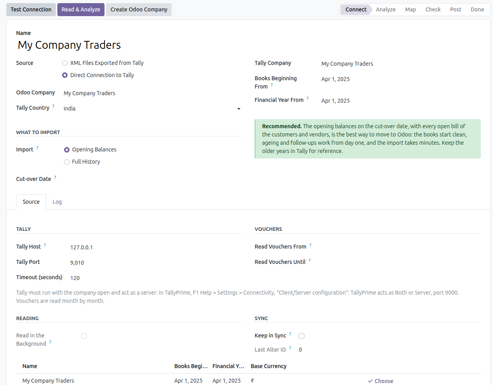
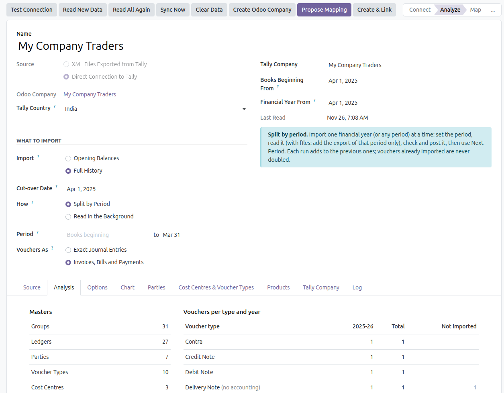
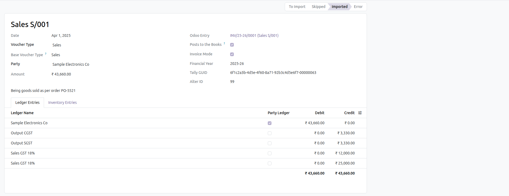

Odoo Mates · free and open source
Tally Connector Base
The engine of Import from Tally: reads the masters and vouchers of a Tally company from its XML export or from Tally itself, and shows what is in them before anything is imported.
FreeXML uploadDirect connectionBackground readingAnalysisLGPL-3
Install Import from Tally (om_tally_connector) to map and post the data.
XML Upload
Masters and Day Book exports of Tally, UTF-16, UTF-8 or ASCII.
Direct Connection
Export requests to Tally on port 9000: companies, masters, vouchers by month.
Background Reading
One file or one month per step, piece by piece, resumed after the time limit.
Staging Tables
Groups, ledgers with open bills, voucher types, cost centres, stock, vouchers with all their lines.
Analysis
Counts per type and year, opening difference, problems to look at.
Mapping Table
Each record of Tally mapped by GUID to its Odoo record: no duplicates.
Changes by Alter ID
The sync reads only what changed in Tally.
Tally Country
India, UAE, Saudi Arabia, Bahrain: GSTIN or TRN read and checked.
A closer look
Read your Tally company
Connect

✓ Test the connection and choose the company open in Tally.
✓ Or upload the XML files exported from Tally.
✓ Check the Tally country.
Read in the background

✓ A progress bar, piece by piece, resumable.
Analyze

✓ Masters and vouchers per type and year.
✓ Problems listed with a link to the record.
Every voucher, as Tally sent it

✓ Ledger entries, bill allocations, cost centres and inventory lines.
✓ Cancelled, optional, post-dated and non-accounting vouchers are left out.
Tally and TallyPrime are trademarks of their owner, Tally Solutions. This app is made by Odoo Mates; it is not made, endorsed or supported by Tally Solutions. The names are used only to say which data the app reads.